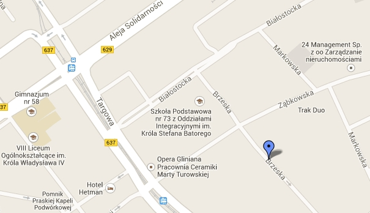

Pogotowie komputerowe
RAPID
24 godziny
na dobę
7 dni
w tygodniu
Dzwoń teraz:
+48 685 331 466
Rozwiązujmy problemy związane z działąniem komputera, drukarki oraz sieci komputerowej.
Naprawiamy uszkodzony sprzęt komputerowy.
Pomagamy w wyborze nowego sprzętu komputerowego.
Dojazd do klienta
GRATIS!!!
Pogotowie komputerowe
RAPID
ul. Brzeska 187
00-950 Warszawa
tel.:+48 685 331 466
e-mail:
pogotowie@rapid.pl
www:
http://pogotowie.rapid.pl

Pogotowie komputerowe RAPID © 2013